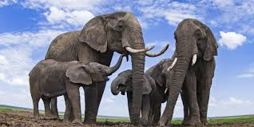
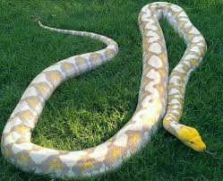
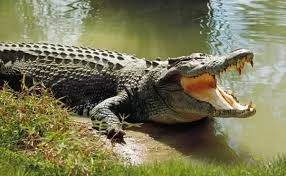
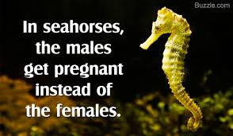
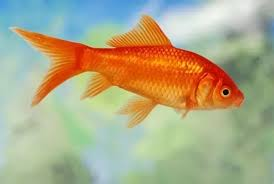
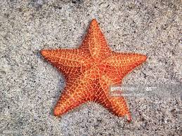

| Name |
Picture |
Description |
| Tiger |
 |
The tiger (Panthera tigris) is the largest extant cat species and a member of the genus Panthera. It is most recognisable for its dark vertical stripes on orange-brown fur with a lighter underside. It is an apex predator, primarily preying on ungulates such as deer and wild boar. |
| Lion |
 |
The lion (Panthera leo) is a species in the family Felidae and a member of the genus Panthera. It is most recognisable for its muscular, deep-chested body, short, rounded head, round ears, and a hairy tuft at the end of its tail. It is sexually dimorphic; adult male lions have a prominent mane. |
| Elephent |
 |
Elephants are mammals of the family Elephantidae and the largest existing land animals. Three species are currently recognised: the African bush elephant, the African forest elephant, and the Asian elephant. Elephantidae is the only surviving family of the order Proboscidea; extinct members include the mastodons. The family Elephantidae also contains several now-extinct groups, including the mammoths and straight-tusked elephants. African elephants have larger ears and concave backs, whereas Asian elephants have smaller ears, and convex or level backs. |
| Name |
Picture |
Description |
| lizard |
 |
Lizards are a widespread group of squamate reptiles, with over 6,000 species,[1] ranging across all continents except Antarctica, as well as most oceanic island chains. The group is paraphyletic as it excludes the snakes and Amphisbaenia; some lizards are more closely related to these two excluded groups than they are to other lizards. Lizards range in size from chameleons . |
| python |
 |
The Pythonidae, commonly known as pythons, are a family of nonvenomous snakes found in Africa, Asia, and Australia. Among its members are some of the largest snakes in the world. Nine genera and 40 species are currently recognized.[2] . |
| crocldile |
 |
Crocodiles (subfamily Crocodylinae) or true crocodiles are large semiaquatic reptiles that live throughout the tropics in Africa, Asia, the Americas and Australia. Crocodylinae, all of whose members are considered true crocodiles, is classified as a biological subfamily. A broader sense of the term crocodile, Crocodylidae that includes Tomistoma, is not used in this article. The term |
| Name |
Picture |
Description |
| seahourse |
 |
Seahorses are fish. They live in water, breath through gills and have a swim bladder. However they do not have caudal fins and have a long snake-like tail. They also have a neck and a snout that points down. |
| goldfish |
 |
The goldfish (Carassius auratus) is a freshwater fish in the family Cyprinidae of order Cypriniformes. It is one of the most commonly kept aquarium fish.
A relatively small member of the carp family (which also includes the Prussian carp and the crucian carp), the goldfish is native to East Asia.. It was first selectively bred in ancient China |
| starfish |
 |
Starfish or sea stars are star-shaped echinoderms belonging to the class Asteroidea. ... About 1,500 species of starfish occur. on the seabed in all the world's oceans, from the tropics to frigid polar waters. They are found from the intertidal zone down toabyssal depths, 6,000 m (20,000 ft) below the surface |